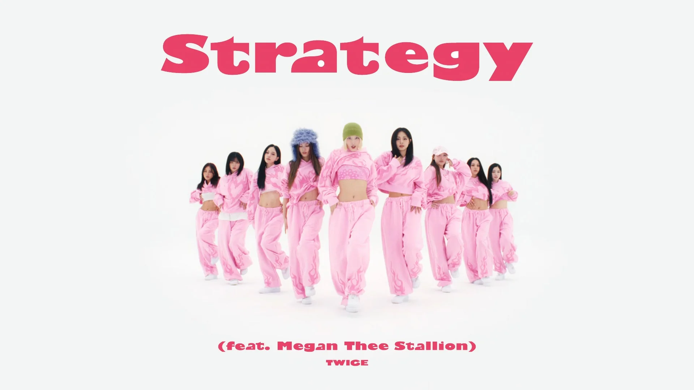
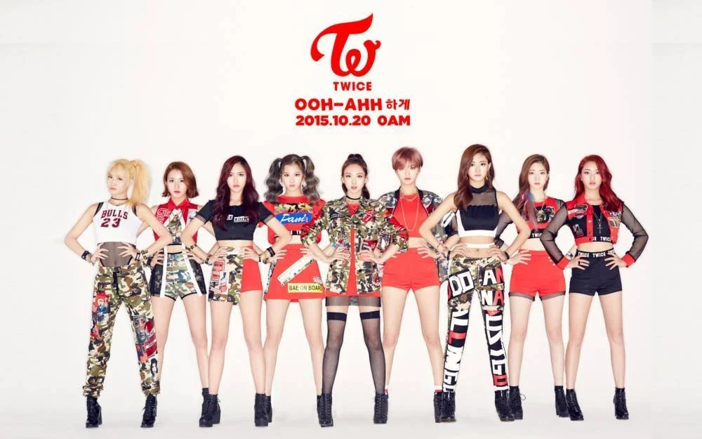

Group Name Meaning: As stated by J. Y. Park, “The group will touch
people’s hearts twice, once through the ears, and once again through
the eyes.” Official Greeting: “One in a million! Hello, we are TWICE!“
TWICE
DATE: FEB 2, 2025

Twice debuted on October 20, 2015.